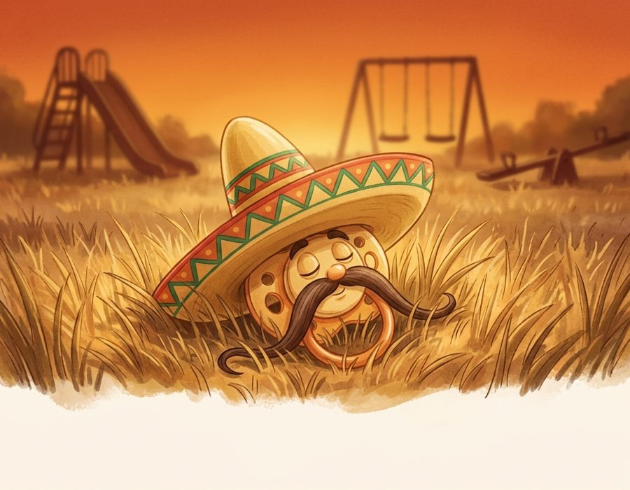
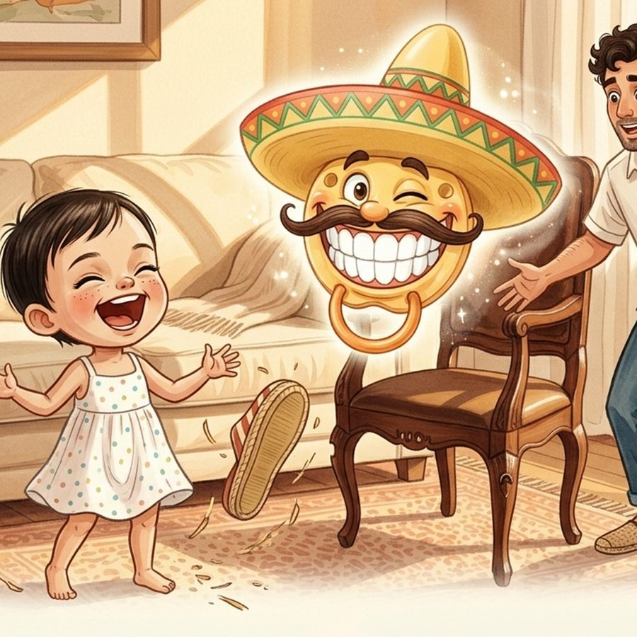

Vola
Si alza in aria in un baleno e attraversa parchi, case e cucine per arrivare dove c'è un bambino che ha bisogno di lui.

Un ciuccio messicano volante ha perso la sua bambina. Di tappa in tappa aiuta altri bimbi ad affrontare le sfide della crescita. Ogni storia lascia il bambino con un sorriso e il genitore con un respiro di sollievo.
È un libro collaborativo: il prossimo capitolo puoi scriverlo tu.
Il ciuccio preferito di Elena. Una sera lei lo perde nell'erba alta del parco, e lui si sveglia con una missione: ritrovarla. Lungo la strada però non riesce a non fermarsi ogni volta che un bambino è in difficoltà.


El Chucharon non è un ciuccio normale: sa fare cose magiche.
Si alza in aria in un baleno e attraversa parchi, case e cucine per arrivare dove c'è un bambino che ha bisogno di lui.
Sposta il sombrero sulle spalle e diventa El Chucharito: baffi su, occhi vispi, pieno di energia. Disegna nell'aria arcobaleni, piramidi e magie.
Solo i bambini si accorgono di lui. Mamma e papà, proprio in quel momento, guardano sempre da un'altra parte.
Il paradenti sembra un sombrero colorato, l'anello due baffi lunghi lunghi, i più lunghi che un ciuccio abbia mai avuto.
Una tartaruga messicana, le espadrillas portate dal Messico, le piramidi: basta che un genitore la dica, senza saperlo, ed eccolo.
El Chucharito, El Chucharito… Ogni bambino ha la sua strofa, e il problema si risolve cantando.
Mezzo italiano e mezzo spagnolo, con qualche parola inventata. Si lamenta in modo musicale, come un ritornello che non ti togli più dalla testa.
¿Dónde está Elenita?quando si sveglia e cerca la sua bambina
¡Vamos a ver!prima di volare via in un baleno
Yo soy muy stanchito… ai ai ai aiaiai…il suo lamento preferito
Me pare que es arivado el momento del Chucharito!un attimo prima della trasformazione
¡La mia Elenita! ¡Está aquí!il finale che aspetta da tutto il libro
Ogni capitolo: un bambino, un problema, una parola messicana… ed ecco El Chucharito.
Scegli i capitoli e trascinali (⠿) per decidere l'ordine: prologo ed epilogo sono sempre inclusi. Il PDF viene composto nel tuo browser.
Ogni capitolo segue la stessa struttura. La proposta viene validata automaticamente da Claude; se passa, testo e illustrazioni vengono prodotti e, dopo la revisione, pubblicati qui.